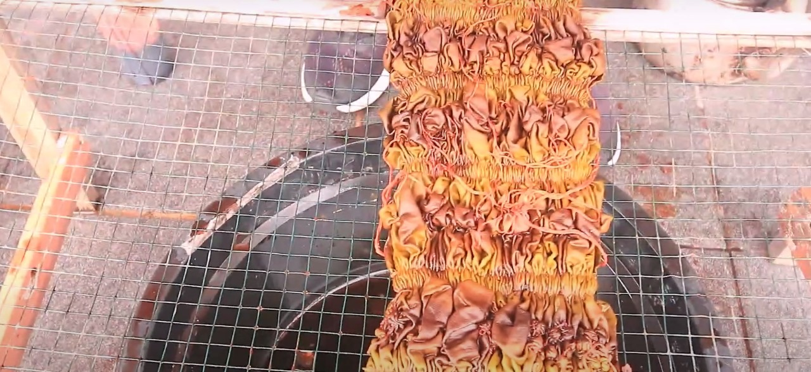

Materi > Teknik Pembuatan Sasirangan
Teknik Pembuatan Kain Sesirangan
Menyiapkan Kain Putih
Mempersiapkan bahan kain putih polos sesuai dengan ukuran yang diinginkan. Pada awal kemunculannya bahan baku yang digunakan untuk membuat kain sasirangan yaitu berupa serat kapas (cotton), namun seiring berjalannya waktu saat ini lebih banyak memanfaatkan material lain seperti santung, balacu, kaci, king, satin, polyester, rayon, dan sutera.

Pembuatan Pola Desain Pada Media Kain
Setelah itu dilanjutkan dengan pembuatan pola gambar tradisional sesuai dengan motif yang dikehendaki. Pola-pola inilah yang kemudian dijadikan patokan dalam menjahit kain tersebut.

Menjahit Jelujur
Pola-pola tersebut dijahit jelujur menggunakan benang atau bahan perintang lainnya dengan jarak satu sampai dua mili meter atau dua sampai tiga mili meter. Benang-benang yang terdapat pada setiap jahitan-jahitan pola tersebut ditarik sampai membentuk kerutan-kerutan.

Membersihkan Kain
Bila kain yang digunakan mengandung kanji maka harus dibersihkan terlebih dahulu dengan cara merendamnya dalam air dingin yang telah dicampur dengan kaporit selama satu malam.
Pewarnaan Kain
Sedikitnya terdapat tiga cara pewarnaan kain sasirangan, diantaranya pencelupan, pencoletan, serta kombinasi keduanya (pencelupan dan pencoletan).- Teknik pencelupan digunakan untuk memperoleh satu warna saja, yaitu dengan cara mencelupkan kain ke dalam larutan zat pewarna, kecuali pada bagian kain yang dijelujur. Bagian yang dijelujur akan tetap berwarna putih.
- Pewarnaan dengan cara dicolet biasanya dilakukan apabila motif yang dibuat memerlukan lebih dari satu warna.
- Pada teknik pencelupan dan pencoletan, untuk memperoleh warna dasar yang bagus kain dicelup terlebih dahulu kemudian dicolet dengan variasi warna sebagaimana telah direncanakan.
Melepas Jahitan Jelujur
Selanjutnya benang-benang jahitan atau ikatan pada kain yang digunakan untuk menjelujur tersebut kemudian dilepaskan seluruhnya, apabila kain dirasa sudah agak kering. Sehingga akan terlihat motif-motif bekas jahitan yang tampak diantara kain tersebut.

Pencucian
Setelah seluruh perintang dilepaskan, barulah kemudian dicuci sampai bersih ditandai dengan air bekas cuciannya yang jernih atau tidak berwarna lagi.

Finishing / Disetrika
Sebagai penyempurnaan akhir dari proses pembuatan kain sasirangan, kain tersebut kemudian di setrika agar menjadi halus, licin dan rapi.